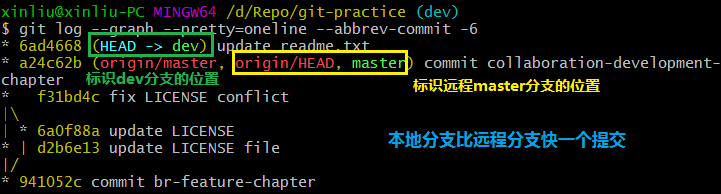
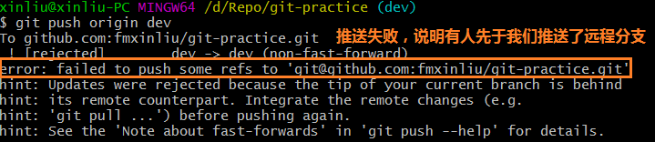
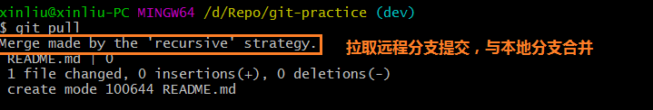
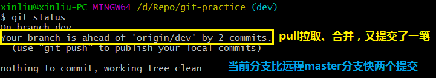
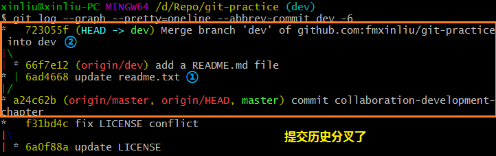
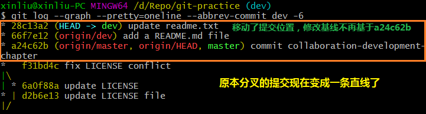
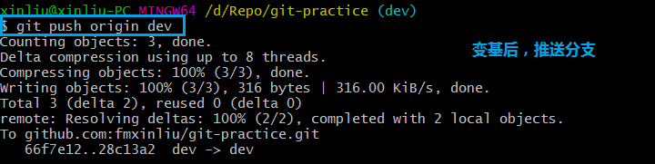
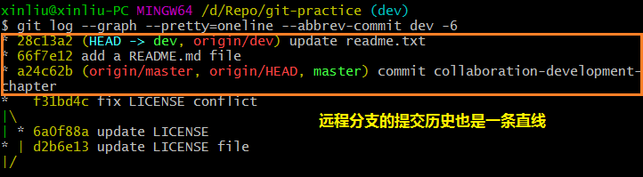

上一篇《多人协作》
在和远程分支同步后，我们对readme.txt这个文件做了提交，查看提交历史：

现在，我们尝试推送本地分支：

推送失败，尝试拉取远程分支到本地，进行合并：

合并后，查看当前分支的状态：

合并后，查看当前分支的提交历史：

push到远程，远程分支的提交历史也就分叉了，怎么把分叉的提交变成直线呢？执行命令git rebase：
变基后，查看当前分支的提交历史：

这就是rebase操作的特点：把分叉的提交历史“整理”成一条直线，看上去更直观。缺点是本地的分叉提交已经被修改过了。
最后，通过push操作把本地分支推送到远程：

推送后，查看提交历史：
